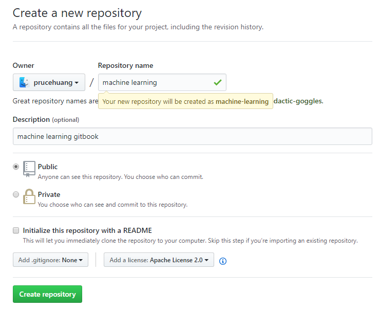

1.1.
Introduction
1.2.
GitBook
1.2.1.
安装&命令
1.2.2.
部署
1.2.3.
Markdown编辑
1.2.4.
book.json插件
1.3.
GitHub
1.3.1.
注册使用
1.3.2.
常用命令
1.4.
感谢&参考文章
本书使用 GitBook 发布
注册使用
注册使用
注册GitHub账号
https://github.com
创建新的Repositories

Git clone到本地
$ git clone https://github.com/prucehuang/machine-learning.git
开始你的使用
results matching "
"
No results matching "
"
results matching "
"
No results matching "
"